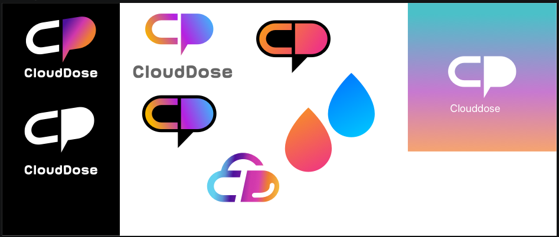
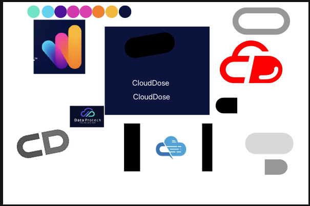

CloudDose
Brand identity for a Cloud and DevOps content creator
DESCRIPTION
CloudDose was a 2023 branding engagement for a Cloud and DevOps content creator, influencer, and technical expert. The brand needed to feel credible in the cloud engineering space, but still work as a personal media identity across YouTube, Facebook, Instagram, and profile-avatar contexts.
CONTEXT
The name already carried a clear visual idea: a useful dose of cloud knowledge. The design direction turned that literal meaning into a compact mark, combining a cloud-like form, a dose/drop cue, and creator-language energy through a speech-bubble silhouette.
The final system was delivered as a practical brand kit, not just a logo. It included the core mark, color variants, profile usage, social post frames, YouTube cover art, and a brand PDF for handoff.


Full Case Study
A creator brand designed around a simple promise: make cloud and DevOps knowledge feel direct, memorable, and repeatable.
The Challenge
Cloud and DevOps content sits in a crowded visual category. Most identities default to generic cloud outlines, terminal windows, blue gradients, or abstract network diagrams. CloudDose needed to be technical enough for an expert audience, but distinct enough to survive fast-scrolling social feeds and small avatar placements.
The brief was to create a brand that could support educational content, technical opinions, quick explainers, and platform-native media templates without feeling like an enterprise SaaS company.
Naming Logic
The strongest strategic cue was already in the name. "CloudDose" suggests a measured, useful serving of cloud knowledge. I used that literal meaning as the core design constraint: the mark should read as cloud-related, feel like a compact dose, and still carry the personality of a content creator.
The final direction resolves that into a short visual system: the left side carries the C / cloud structure, while the right side becomes a D-shaped dose and speech-bubble form. That gave the brand a technical base and a communication layer in one mark.
Initial exploration: cloud forms, CD letter combinations, color direction, and moodboard fragments.
Prototype pass: testing readability, the cloud/dose metaphor, and the creator-friendly speech-bubble shape.
Final Logo Options and Use Cases
After the selected direction was clear, I prepared practical logo options for the places CloudDose would appear most often: dark creator thumbnails, light backgrounds, profile use, and high-color campaign moments.
These were not separate concepts. They were usage-ready treatments of the selected mark, making it clear which version to use depending on contrast, background, and content format.


Client-Presented Logo Options
These boards were not the final color system. They were alternative directions presented to the client during exploration, showing how far the identity could lean into gradient energy, a literal cloud shape, or a stronger outlined badge.
Presenting these options helped compare recognizability, technical feel, and creator-platform usefulness before narrowing into the selected CloudDose mark.

Alternative direction presented to the client: a gradient-heavy CD mark with strong creator energy.

Alternative direction presented to the client: a more literal cloud interpretation.

Alternative direction presented to the client: a bolder outlined badge option.
Creator Asset System
The brand was delivered with assets for real publishing contexts. The profile picture keeps the symbol large and centered. The YouTube cover uses a dark pattern field so the logo can sit with enough contrast. The thumbnail overlay and social templates give the creator repeatable frames for future content instead of one-off artboards.
This mattered because CloudDose was not a static company identity. It needed to become a recognizable wrapper around recurring technical content.

Facebook post template for announcements, snippets, and technical updates.

Instagram square template designed around the same border and black-field language.
Delivery
The project was delivered as a practical branding package: logo SVGs, raster exports, creator profile assets, social templates, YouTube cover art, thumbnail overlay, and the final brand PDF. The system was ready to be used across CloudDose content without needing a fresh layout for every post.
The final outcome gave CloudDose a clear creator identity: technical, high-contrast, energetic, and directly tied to the meaning of the name.
This was a compact branding project, but the useful part was the discipline: the identity had to be memorable at avatar size, meaningful at logo size, and repeatable across content formats.
CloudDose branding, designed and delivered in 2023.